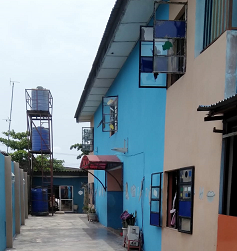

Vision
To be A First Class Institution of Learning in Nigeria Noted for Her Integrity, And The The Distinction of Her Alumni.
To Produce Well Rounded , Intelligent , Moral Student Capable of Handling and Thriving in Today's Challenging And Every Changing World!!!
Mission
To Train Distinguished Students through The Provision of a Comprehensive Curriculum, Conducive Learning Environment, Qualified and Dedicated Staff.
And To Be The Number One, Preferred And-Go-To Pre-Tertiary Educational Institution By Parents And Guardians For Effective Pre-Tertiary Education In Nigeria.
Proprietor's
Welcome
Message
St. Rita Model Schools, Festac is A Child Of Necessity And An Eloquent Manifestation That The Will Of God Always Holds Sway In Any Human Endeavor. It Is A School That Is Deeply Rooted In God And That Sincerely Believes That Education Should Bring The Best In The Learners In All Ramifications. Thus It's motto " Excellence In Learning And Character" .
The School Was Established on 17th September, 2018 And Since Then It Has Striven To Be One To Be Reckoned With In Festac Town And Beyond. Our Beloved Parents Would Really Attest To This. In Order To Actualize It's Vision Of Being " A First Class Institution In Nigeria Noted For Her Integrity And The Distinction Of Her Alumni" , The School Boasts of The Following:
• A Comprehensive Curriculum.
• Excellent Learning Environment.
• Well Trained And Dedicated Staff Who Are Frequently Given In-Service Training Co-curricular Activities ( e.g. Debate, Spelling Bee, Sports, Drama, Dancing, e.t.c.) Meant To Ensure Pupils Wholesome Development.
• 21st Century Learning Facilities.
• Reliable Bus Service.
We Look Forward To Welcoming Our New Pupils And Promise Them The Best In Education - An Education that Will Not Only Make Them Academically Sound But Morally Reliable.
M. Onyema Onyenakeya
A Retired Principal Of First Class School, An Established Author, Leadership Coach, An Educational Consultant And Holder Of Several Degrees such as N.C.E, B. Ed, M.Ed.


Concieved , Crafted
Maintained & Managed
For
St.
Rita
Model
Schools ®
By
Prosperities - Solutions
In The Name
Of
Jesus The Christ
And
Engineer Ugo Obi
Zero-Pleasure-Pleasures
In Breaking Any Of
The
Ten Commandments
Of The Bible
And
Engineer Ugo Obi
Reading
3 Pages Of The Bible
Daily
And
Engineer Ugo Obi
Abilities And Efforts
Copyright
©
2024 - 2025
All
Rights
Reserved.